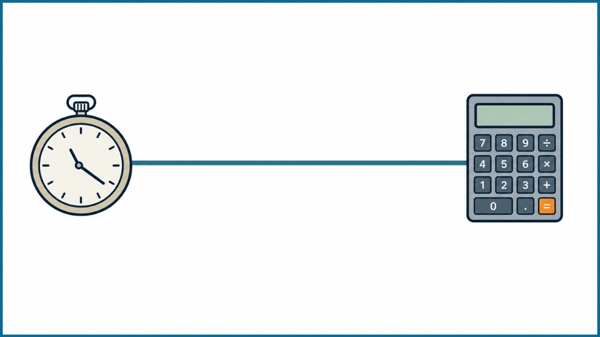

CGPA Formula to Calculate CGPA
Published on: 15/03/2026 · Updated: 21/10/2026CGPA stands for Cumulative Grade Point Average. It shows your overall academic performance across multiple courses or semesters. Universities and educational institutions use CGPA to measure a student's academic progress.
The basic CGPA formula is:
CGPA = Total Weighted Grade Points ÷ Total Credit Hours
In this guide, you will learn how to calculate CGPA course wise, semester wise, without credits, and on 4.0 and 10.0 grading scales. Each method includes formulas and practical examples to help you calculate your CGPA correctly.

CGPA Formula Course Wise Calculation
The course wise CGPA formula calculates your overall grade average using individual course grades and their credit hours.
Each course may carry different credits. For example, a mathematics course may have 3 credits, while a laboratory course may have 1 credit. Courses with more credits contribute more to your CGPA.
Formula:
CGPA = Σ(Grade Point × Course Credit) ÷ Σ(Course Credits)
Here:
- Grade Point: The numerical value assigned to your course grade.
- Course Credit: The credit hours assigned to a particular course.
- Total Grade Points: The sum of each course's grade point multiplied by its credits.
- Total Credits: The sum of credit hours for all included courses.
Example:
Suppose you completed five courses with the following results:
| Course | Grade Point | Credit | Weighted Grade Points |
|---|---|---|---|
| Mathematics | 3.75 | 3 | 11.25 |
| English | 3.50 | 3 | 10.50 |
| Physics | 4.00 | 4 | 16.00 |
| Chemistry | 3.25 | 3 | 9.75 |
| Computer Science | 3.75 | 3 | 11.25 |
| Total | 16 | 58.75 |
Now apply the formula:
CGPA = 58.75 ÷ 16
CGPA = 3.67 out of 4.00
This method is useful when you have individual course grades and credits. Include all eligible courses from the academic periods you want to calculate.
CGPA Formula Semester Wise Calculation
You can also calculate CGPA using your semester GPAs, commonly called SGPAs, and the total credits completed in each semester.
If your semesters have different credit hours, use a weighted average rather than a simple average.
Formula:
CGPA = Σ(Semester GPA × Semester Credits) ÷ Total Credits
Example:
A student has completed four semesters:
| Semester | GPA | Credits | Weighted Grade Points |
|---|---|---|---|
| Semester 1 | 3.50 | 15 | 52.50 |
| Semester 2 | 3.75 | 18 | 67.50 |
| Semester 3 | 3.25 | 15 | 48.75 |
| Semester 4 | 3.80 | 18 | 68.40 |
| Total | 66 | 237.15 |
CGPA = 237.15 ÷ 66
CGPA = 3.59
The result reflects your cumulative performance across all four semesters.
If every semester has the same total credits, you can simply add the semester GPAs and divide by the number of semesters.
CGPA Formula for Different Semesters
The CGPA formula remains the same whether you have completed 2, 4, 6, or 8 semesters. What changes is the number of semesters and their total credits.
For semesters with equal credits, you can use the following formulas:
| Completed Semesters | CGPA Formula |
|---|---|
| 2 Semesters | (SGPA1 + SGPA2) ÷ 2 |
| 3 Semesters | (SGPA1 + SGPA2 + SGPA3) ÷ 3 |
| 4 Semesters | (SGPA1 + SGPA2 + SGPA3 + SGPA4) ÷ 4 |
| 6 Semesters | Sum of 6 SGPAs ÷ 6 |
| 8 Semesters | Sum of 8 SGPAs ÷ 8 |
Example for 6 semesters:
Suppose your semester GPAs are:
- Semester 1: 3.40
- Semester 2: 3.60
- Semester 3: 3.75
- Semester 4: 3.50
- Semester 5: 3.80
- Semester 6: 3.65
CGPA = (3.40 + 3.60 + 3.75 + 3.50 + 3.80 + 3.65) ÷ 6
CGPA = 21.70 ÷ 6
CGPA = 3.62
This calculation assumes all six semesters have equal credits. If their credit totals differ, multiply each SGPA by its semester credits before dividing by the total credits.
CGPA Formula Without Credits
You can calculate CGPA without credits when all courses or semesters have equal weight in your institution's grading system.
The process is straightforward. Add all the grade points and divide the total by the number of courses or semesters.
Formula:
CGPA = Sum of Grade Points ÷ Number of Courses
Example:
Suppose you received the following grade points in five equally weighted subjects:
| Subject | Grade Point |
|---|---|
| Mathematics | 9 |
| English | 8 |
| Science | 9 |
| History | 7 |
| Computer Science | 10 |
| Total | 43 |
CGPA = 43 ÷ 5
CGPA = 8.6 out of 10
You can use the same approach for semester GPAs if every semester carries equal weight.
However, if your university assigns different credits to courses, a simple average may produce an incorrect CGPA. Always check your institution's grading rules before using this method.
CGPA Formula Out of 4.0
The 4.0 CGPA scale is commonly used by universities in the United States, Bangladesh, and other countries.
Under this system, 4.00 generally represents the highest possible grade point. However, the grade assigned to a particular percentage or letter grade varies by institution.
Formula:
CGPA = Total (Course Grade Point × Course Credit) ÷ Total Course Credits
CGPA Calculation Example Out of 4.0
Suppose a student completes four courses:
| Course | Grade Point | Credit |
|---|---|---|
| Course A | 4.00 | 3 |
| Course B | 3.75 | 3 |
| Course C | 3.50 | 3 |
| Course D | 3.25 | 3 |
Step 1: Multiply each grade point by its credits.
(4.00 × 3) + (3.75 × 3) + (3.50 × 3) + (3.25 × 3)
= 12 + 11.25 + 10.50 + 9.75
= 43.50
Step 2: Calculate total credits.
3 + 3 + 3 + 3 = 12
Step 3: Divide weighted grade points by total credits.
CGPA = 43.50 ÷ 12
Final CGPA = 3.63 out of 4.00
The result is rounded to two decimal places.
CGPA Formula Out of 10.0
The 10.0 CGPA scale is used by many educational institutions, particularly in India.
Under this grading system, 10.0 represents the highest possible grade point. The calculation method is similar to the 4.0 scale, but the grade values are different.
Formula:
CGPA = Total Weighted Grade Points ÷ Total Credits
CGPA Calculation Example Out of 10.0
Suppose you completed five equally weighted subjects with these grade points:
| Subject | Grade Point |
|---|---|
| Mathematics | 9 |
| English | 8 |
| Physics | 10 |
| Chemistry | 9 |
| Computer Science | 8 |
Step 1: Add all grade points.
9 + 8 + 10 + 9 + 8 = 44
Step 2: Count the subjects.
Total Subjects = 5
Step 3: Divide the total by the number of subjects.
CGPA = 44 ÷ 5
Final CGPA = 8.8 out of 10
Since all subjects have equal weight, a simple average works in this example. For courses with different credits, use the credit weighted formula instead.
CGPA to Percentage Formula
Many students need to convert CGPA into a percentage for university admission, scholarships, or job applications.
However, there is no single CGPA to percentage formula that applies to every institution. Conversion rules depend on your university, education board, and grading scale.
Some institutions using a 10.0 scale apply the following formula:
Percentage = CGPA × 9.5
For example, if your institution officially uses this method and your CGPA is 8.2:
Percentage = 8.2 × 9.5
Percentage = 77.9%
Other institutions may use a different multiplier or an official conversion table.
| CGPA Scale | Percentage Conversion |
|---|---|
| 10.0 Scale | CGPA × 9.5, where officially prescribed |
| 4.0 Scale | Follow the institution's official conversion policy |
| Other Scales | Use the applicable grading or equivalency rules |
Important: Multiplying a 4.0 CGPA by 25 is sometimes used as a rough estimate, but it is not a universally accepted conversion. For official applications, use the percentage formula specified by your institution.
Examples of CGPA Calculation
Here are three common CGPA calculation situations.
Example 1: Calculating CGPA from two semesters
A student receives 3.60 in the first semester and 3.80 in the second semester. Both semesters have equal credits.
CGPA = (3.60 + 3.80) ÷ 2
Result = 3.70
Example 2: Calculating CGPA from unequal semester credits
A student completes 15 credits with a GPA of 3.40 and 18 credits with a GPA of 3.80.
CGPA = (3.40 × 15 + 3.80 × 18) ÷ (15 + 18)
CGPA = 119.40 ÷ 33
Result = 3.62
Example 3: Calculating CGPA from four equal credit courses
A student earns grade points of 3.25, 3.50, 3.75, and 4.00.
CGPA = (3.25 + 3.50 + 3.75 + 4.00) ÷ 4
Result = 3.63
These examples show why it is important to identify whether your courses or semesters have equal or different credits before selecting a formula.
Frequently Asked Questions
What Is the Formula for Calculating CGPA?
The standard credit weighted CGPA formula is:
CGPA = Σ(Grade Point × Credit Hours) ÷ Total Credit Hours
It calculates your average academic performance while accounting for the credit value of each course.
How to Calculate CGPA from Semester GPA?
Multiply each semester GPA by its total credits. Add the results and divide by the total credits completed across those semesters.
If all semesters carry equal credits, add their GPAs and divide by the number of semesters.
Can I Calculate CGPA Without Credits?
Yes, if your institution gives equal weight to all included courses or semesters. Add the grade points and divide by their total number. For unequal credits, you need credit information to calculate the weighted CGPA accurately.
Is CGPA Calculated by Averaging All Semester GPAs?
Not always. Averaging semester GPAs works only when all semesters carry equal weight. If credit hours differ, CGPA must be calculated using a weighted average based on each semester's credits.
How to Calculate CGPA for 8 Semesters?
For eight semesters with equal credits, use:
CGPA = (SGPA1 + SGPA2 + SGPA3 + SGPA4 + SGPA5 + SGPA6 + SGPA7 + SGPA8) ÷ 8
For example, suppose your eight semester GPAs are 3.40, 3.50, 3.60, 3.70, 3.80, 3.50, 3.90, and 3.80.
CGPA = 29.20 ÷ 8
CGPA = 3.65
If semester credits differ, calculate the credit weighted average instead.
Final Thoughts
Calculating CGPA is simple once you understand how grade points and credits work together. For courses or semesters with equal credits, a simple average is enough. When credits differ, a weighted average gives the correct result.
Whether your institution uses a 4.0 or 10.0 scale, the main calculation principle remains the same. Before calculating your final CGPA, check your university's grading policy, credit requirements, and rounding rules to make sure your result matches your academic transcript.